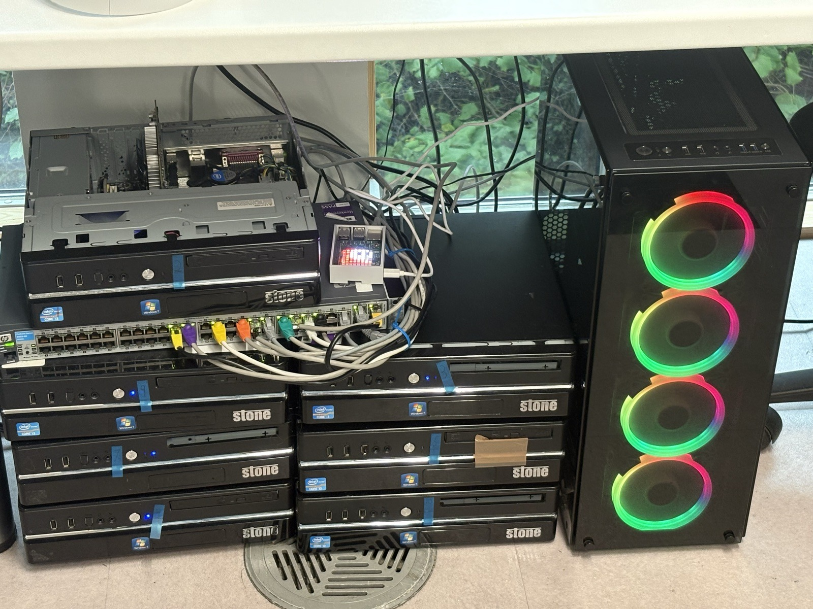

About Me
Hiii!!! My name is Jacob and I'm a Cyber Security student with a strong interest in Digital Forensics, Incident Response (DFIR), and OSINT.
I am developing my technical skills with hands-on projects and experimenting with my own homelab. I use Proxmox VE to explore virtualisation, networking, server management and security tooling.
I'm also interested in AI and run local AI systems using a PHP backend with a web interface hosted through Apache, as well as my own project named Marina.
I'm passionate about cybersecurity and want to continue developing my skills in digital forensics, DFIR, infrastructure and emerging technologies.
My Skills
Areas of cybersecurity and technology that I am currently developing my knowledge and practical experience in.
Digital Forensics
I am learning how to conduct digital forensics investigations and analyse digital evidence to support legal proceedings.
Incident Response
I am developing my skills in incident response, including identifying, containing, and mitigating security incidents.
OSINT
I am learning how to gather and analyse publicly available information to support investigations and threat intelligence.
Networking
I am developing my knowledge of networking concepts and protocols, including TCP/IP, DNS, and HTTP.
Virtualisation
I am learning how to use virtualisation technologies such as Proxmox VE to create and manage virtual machines and containers.
My Achievements
Here are some of my achievements:
Maltego OSINT CTF
Completed the Qualifier A challenge for the Maltego CTF, which helped me develop practical OSINT investigation skills.
Stardance Hackclub Challenge
I built this personal website using HTML, CSS and JavaScript for the Stardance Hackclub Challenge.
Homelab Built
I have set up my own homelab using Proxmox VE to experiment with virtualisation, networking, and security tools.
Local AI Setup
I run local AI systems using a PHP backend with a web interface hosted through Apache, and built my own AI companion, Marina.
Cyber Security Student
I am currently studying Cyber Security and developing my skills in digital forensics, incident response, OSINT, networking, and virtualisation.
My Projects
Here are some of my projects:
My Homelab
A self-hosted environment to experiment with virtualisation, networking and different security tools.

Marina
A local AI system that acts as a customisable desktop companion and can assist with setting timers, checking battery and a lot of other things!
My Personal Website
A personal website I built using HTML, CSS and JavaScript for the Stardance Hackclub Challenge!


Contact Me
Want to get in touch? You can find me here: